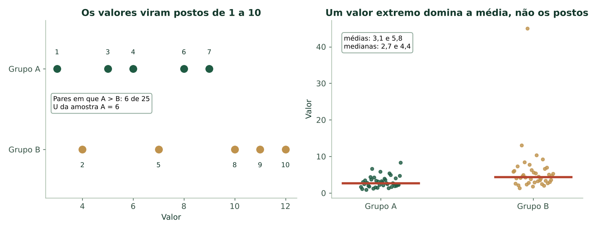
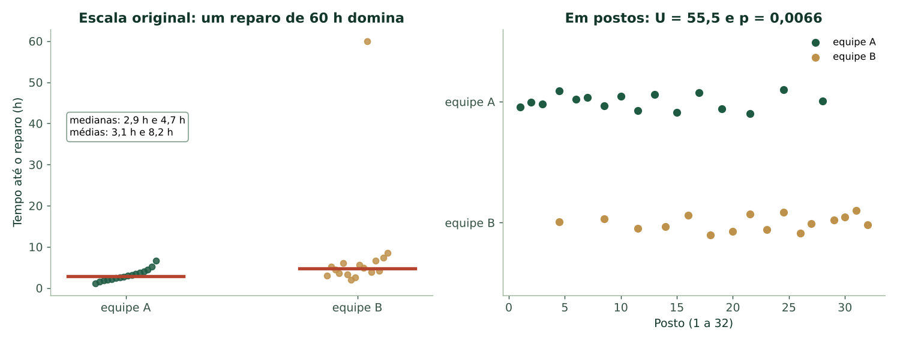

Mann–Whitney / Wilcoxon rank-sum
Verifica se duas populações independentes apresentam distribuições diferentes, comparando os postos das observações.
Comece por aqui
Tempos de atendimento, custos, concentrações: muitas variáveis são assimétricas, com uma cauda longa à direita e ocasionais valores muito altos. Nesses casos a média deixa de representar o comportamento típico, e o teste t perde poder. O teste de Mann–Whitney troca os valores por postos e pergunta se um grupo tende a produzir valores maiores que o outro.
Wilcoxon (1945) propôs a soma de postos; Mann e Whitney (1947) chegaram ao mesmo procedimento pela contagem de pares. As estatísticas \(W\) e \(U\) diferem por uma constante e dão sempre o mesmo valor-p. O R usa o nome Wilcoxon rank sum test.
O que é o teste
Juntam-se as duas amostras, ordenam-se todos os valores e atribui-se a cada um o seu posto. Se os dois grupos vierem da mesma distribuição, os postos altos e baixos devem se distribuir de forma parecida entre eles. A estatística \(U\) conta, entre todos os \(n_1\times n_2\) pares formados por uma observação de cada grupo, em quantos o valor do primeiro grupo é maior.

A hipótese nula geral é que as duas distribuições são iguais. Para interpretar o resultado como diferença de medianas ou como deslocamento, é preciso supor adicionalmente que as duas distribuições têm a mesma forma e a mesma dispersão. Sem essa suposição, a leitura correta é em termos de probabilidade de superioridade.
Pressupostos e como verificá-los
| Pressuposto | Por que importa | Como verificar |
|---|---|---|
| Amostras independentes | Pressuposto central. | Delineamento; para dados pareados, use o Wilcoxon de postos sinalizados. |
| Variável ao menos ordinal | É preciso poder ordenar. | Natureza da variável. |
| Normalidade | Não é exigida. | — |
| Mesma forma e dispersão nos dois grupos | Só é necessária para ler o resultado como diferença de medianas. | Boxplots e histogramas; compare as dispersões. |
| Poucos empates | Muitos empates exigem a correção da variância e tornam o valor-p aproximado. | table(x); o R avisa quando não pode calcular o valor exato. |
| Amostras não muito pequenas | Com n muito pequeno, nenhum valor-p alcança 0,05. | Com n₁ = n₂ = 4, o menor valor-p bilateral possível é 0,029. |
Hipóteses e estatística de teste
Em que:
- \(R_1\)
- soma dos postos do grupo 1, calculados sobre as duas amostras juntas
- \(n_1,\ n_2\)
- tamanhos das amostras; \(N=n_1+n_2\)
- \(U_1\)
- número de pares em que uma observação do grupo 1 supera uma do grupo 2
- \(t_j\)
- tamanho do j-ésimo grupo de valores empatados
- \(z\)
- estatística padronizada, com correção de continuidade de 0,5
- \(F_1,\ F_2\)
- funções de distribuição das duas populações
Exemplo numérico, passo a passo
Grupo A: 3, 5, 6, 8, 9. Grupo B: 4, 7, 10, 11, 12. Ordenando os dez valores, os postos de A são 1, 3, 4, 6 e 7.
\(R_1=1+3+4+6+7=21\) e \(R_2=55-21=34\).
\(U_1=21-\dfrac{5\times6}{2}=21-15=6\) e \(U_2=34-15=19\); de fato \(U_1+U_2=25=n_1n_2\).
Conferindo pela contagem direta: entre os 25 pares, A supera B em 6 deles (5>4; 6>4; 8>4; 8>7; 9>4; 9>7).
Probabilidade de superioridade de B: \(19/25=0{,}76\).
Valor-p e estimativa pontual
- Sem empates e com amostras pequenas, o R calcula o valor-p exato pela distribuição de permutação.
- Com empates ou amostras maiores (acima de 50 por grupo), usa-se a aproximação normal com correção de continuidade e de empates.
- A estimativa pontual associada é o deslocamento de Hodges–Lehmann: a mediana de todas as \(n_1\times n_2\) diferenças entre pares.
- O intervalo de confiança correspondente sai da inversão do teste (
conf.int = TRUE). - A probabilidade de superioridade \(P(X_2>X_1)=U_2/(n_1n_2)\) é o tamanho de efeito mais direto.
- O delta de Cliff é \(2P-1\) e varia de \(-1\) a \(1\).
Como interpretar os resultados
| Elemento | O que informa | Cuidado |
|---|---|---|
| Valor-p | Evidência de que as distribuições diferem. | Não identifica em quê diferem. |
| Probabilidade de superioridade | Chance de uma observação de um grupo superar uma do outro. | É a leitura mais segura e mais intuitiva. |
| Hodges–Lehmann | Deslocamento típico entre os grupos. | Só é uma “diferença de medianas” se as formas forem parecidas. |
| Delta de Cliff | Efeito de −1 a 1. | 0,15 pequeno; 0,33 médio; 0,47 grande (referências usuais). |
| Diferença entre as medianas | Descrição simples. | Pode diferir do Hodges–Lehmann. |
Reporte: n de cada grupo, medianas, U (ou W), valor-p, a probabilidade de superioridade e, quando fizer sentido, o deslocamento de Hodges–Lehmann com intervalo.
Como executar no R e em Python
Onde executar o código em Python
Não é preciso instalar nada: o Google Colab é um computador na nuvem, gratuito, que executa Python pelo navegador e já traz as bibliotecas usadas aqui (numpy, scipy e matplotlib).
wilcox.test() pertence ao pacote stats, já instalado com o R, e executa o teste de Mann–Whitney quando recebe duas amostras independentes. Use conf.int = TRUE para obter a estimativa de Hodges–Lehmann e seu intervalo. O R devolve \(W\), que é o \(U\) da primeira amostra. Com empates, aparece o aviso de que o valor-p exato não pôde ser calculado.
wilcox.test(tempo ~ equipe, data = dados)
wilcox.test(tempo ~ equipe, data = dados, conf.int = TRUE)
Exemplo de aplicação
Contexto dos dados
Duas equipes de manutenção tiveram registrado o tempo até a conclusão de 16 reparos cada. Os tempos são assimétricos, como é típico desse tipo de dado, e um dos reparos da equipe B levou 60 horas, muito acima dos demais. A pergunta é se as equipes diferem no tempo típico de atendimento. Os dados são fictícios, criados para esta ficha.
Código em R
# Mann-Whitney / Wilcoxon rank-sum: exemplo completo ----
# Pacote: apenas o stats (já vem com o R).
# 1. Dados: tempo até o reparo (h) de duas equipes de manutenção (dados fictícios)
equipeA <- c(1.6, 4.1, 2.8, 3.4, 5.2, 2.2, 2.4, 3.0, 1.2, 3.2, 1.8, 4.5, 3.7, 2.6, 2.0, 6.6)
equipeB <- c(60.0, 2.6, 2.0, 7.4, 4.5, 3.0, 4.2, 8.5, 6.7, 4.9, 3.9, 3.3, 3.6, 6.1, 5.6, 5.2)
dados <- data.frame(tempo = c(equipeA, equipeB),
equipe = factor(rep(c("A", "B"), each = 16)))
rbind(media = tapply(dados$tempo, dados$equipe, mean),
mediana = tapply(dados$tempo, dados$equipe, median),
dp = tapply(dados$tempo, dados$equipe, sd))
# 2. Por que não usar o teste t: assimetria forte e um valor extremo
par(mfrow = c(1, 2))
boxplot(tempo ~ equipe, data = dados, col = "gray85", ylab = "Tempo até o reparo (h)")
qqnorm(equipeB, pch = 19); qqline(equipeB, col = "red")
par(mfrow = c(1, 1))
tapply(dados$tempo, dados$equipe, function(v) shapiro.test(v)$p.value)
t.test(tempo ~ equipe, data = dados) # Welch: não detecta
# 3. Teste de Mann-Whitney (o R chama de Wilcoxon rank sum)
wilcox.test(tempo ~ equipe, data = dados)
# 4. Com estimativa de Hodges-Lehmann e intervalo de confiança
wilcox.test(tempo ~ equipe, data = dados, conf.int = TRUE)
# 5. Cálculo manual: postos, somas e U
postos <- rank(dados$tempo)
R1 <- sum(postos[dados$equipe == "A"]); R2 <- sum(postos[dados$equipe == "B"])
n1 <- 16; n2 <- 16
c(R1 = R1, R2 = R2, total = R1 + R2, esperado = (n1 + n2) * (n1 + n2 + 1) / 2,
U1 = R1 - n1 * (n1 + 1) / 2, U2 = R2 - n2 * (n2 + 1) / 2)
# 6. Tamanho do efeito: probabilidade de superioridade e delta de Cliff
U2 <- R2 - n2 * (n2 + 1) / 2
c(prob_superioridade = U2 / (n1 * n2), delta_de_Cliff = 2 * U2 / (n1 * n2) - 1)
# 7. O efeito do valor extremo e da transformação
semext <- equipeB[equipeB < 50]
c(t_sem_extremo = t.test(equipeA, semext)$p.value,
MW_sem_extremo = wilcox.test(equipeA, semext)$p.value,
t_com_log = t.test(log(equipeA), log(equipeB))$p.value)
# 8. Gráfico dos postos
plot(postos, as.numeric(dados$equipe), pch = 19, yaxt = "n",
xlab = "Posto", ylab = "", ylim = c(0.5, 2.5))
axis(2, at = 1:2, labels = c("equipe A", "equipe B"))
A mesma análise em Python, com os resultados
Cole o código em um notebook do Google Colab ↗ e execute com Shift+Enter. Os valores abaixo são a saída desse código.
# Bibliotecas: numpy, scipy e matplotlib (já instaladas no Google Colab)
import numpy as np
from scipy import stats
import matplotlib.pyplot as plt
# Dados: tempo até o reparo (horas) registrado por duas equipes de manutenção (dados fictícios).
# A distribuição é assimétrica à direita, como é comum em tempos de atendimento.
equipeA = np.array([1.6, 4.1, 2.8, 3.4, 5.2, 2.2, 2.4, 3.0, 1.2, 3.2, 1.8, 4.5, 3.7, 2.6, 2.0, 6.6])
equipeB = np.array([60.0, 2.6, 2.0, 7.4, 4.5, 3.0, 4.2, 8.5, 6.7, 4.9, 3.9, 3.3, 3.6, 6.1, 5.6, 5.2])
n1, n2 = len(equipeA), len(equipeB)
for nome, g in [("equipe A", equipeA), ("equipe B", equipeB)]:
print(f"{nome}: n = {len(g)} | média = {g.mean():.3f} | mediana = {np.median(g):.2f} "
f"| DP = {g.std(ddof=1):.3f} | máximo = {g.max()}")
# 1. Por que não usar o teste t aqui
for nome, g in [("equipe A", equipeA), ("equipe B", equipeB)]:
print(f"Shapiro-Wilk ({nome}): p-valor = {stats.shapiro(g).pvalue:.6f}")
tw = stats.ttest_ind(equipeA, equipeB, equal_var=False)
print(f"Teste t de Welch: t = {tw.statistic:.4f}, p-valor = {tw.pvalue:.4f} (não detecta diferença)")
# 2. Postos: a base do método
todos = np.concatenate([equipeA, equipeB])
postos = stats.rankdata(todos)
R1 = postos[:n1].sum(); R2 = postos[n1:].sum()
print(f"\nSoma dos postos: equipe A = {R1:.1f} | equipe B = {R2:.1f} | total = {R1 + R2:.1f} = N(N+1)/2 = {(n1+n2)*(n1+n2+1)/2:.1f}")
print("Maior tempo da equipe B (60,0 h) recebe o posto", int(postos[n1]), "- e não mais que isso: é só o maior.")
# 3. Estatística U
U1 = R1 - n1 * (n1 + 1) / 2
U2 = R2 - n2 * (n2 + 1) / 2
print(f"\nU1 = {R1:.1f} - {n1}x{n1+1}/2 = {U1:.1f} | U2 = {U2:.1f} | U1 + U2 = {U1+U2:.1f} = n1 x n2 = {n1*n2}")
# 4. Teste (o scipy devolve U da primeira amostra)
res = stats.mannwhitneyu(equipeA, equipeB, alternative="two-sided")
print(f"\nMann-Whitney: U = {res.statistic:.1f}, p-valor = {res.pvalue:.5f}")
# 5. Aproximação normal, com correção de continuidade e de empates
N = n1 + n2
mu_U = n1 * n2 / 2
emp = np.unique(todos, return_counts=True)[1]
correcao = np.sum(emp**3 - emp)
var_U = n1 * n2 / 12 * ((N + 1) - correcao / (N * (N - 1)))
z = (U1 - mu_U + 0.5) / np.sqrt(var_U) if U1 < mu_U else (U1 - mu_U - 0.5) / np.sqrt(var_U)
print(f"Aproximação normal: E(U) = {mu_U:.1f} | Var(U) = {var_U:.4f} | z = {z:.4f} | p-valor = {2*stats.norm.cdf(-abs(z)):.5f}")
print(f"Empates: {int(np.sum(emp > 1))} valores repetidos")
# 6. Tamanho do efeito: probabilidade de superioridade e delta de Cliff
PS = U2 / (n1 * n2) # P(uma observação de B ser maior que uma de A)
print(f"\nProbabilidade de superioridade P(B > A) = {PS:.4f}")
print(f"Delta de Cliff = 2 x {PS:.4f} - 1 = {2*PS - 1:.4f}")
print(f"r = z / raiz(N) = {abs(z)/np.sqrt(N):.4f}")
# 7. Estimativa de Hodges-Lehmann: mediana das diferenças entre todos os pares
difs = np.array([b - a for b in equipeB for a in equipeA])
print(f"\nDeslocamento de Hodges-Lehmann (mediana das {len(difs)} diferenças) = {np.median(difs):.3f} h")
print(f"Diferença entre as medianas = {np.median(equipeB) - np.median(equipeA):.3f} h")
# 8. O efeito do valor extremo
semext = equipeB[equipeB < 50]
print(f"\nSem a observação de 60 h (n = {len(semext)}):")
print(f" teste t de Welch: p-valor = {stats.ttest_ind(equipeA, semext, equal_var=False).pvalue:.5f}")
print(f" Mann-Whitney: p-valor = {stats.mannwhitneyu(equipeA, semext).pvalue:.5f}")
print(f"Com log dos tempos, teste t de Welch: p-valor = {stats.ttest_ind(np.log(equipeA), np.log(equipeB), equal_var=False).pvalue:.5f}")
# 9. Gráficos
fig, ax = plt.subplots(1, 2, figsize=(11, 4))
ax[0].boxplot([equipeA, equipeB]); ax[0].set_xticks([1, 2]); ax[0].set_xticklabels(["equipe A", "equipe B"])
for j, g in enumerate([equipeA, equipeB], 1): ax[0].scatter(np.full(len(g), j), g, alpha=0.6)
ax[0].set_ylabel("Tempo até o reparo (h)")
ax[1].scatter(postos[:n1], np.full(n1, 1), alpha=0.7); ax[1].scatter(postos[n1:], np.full(n2, 2), alpha=0.7)
ax[1].set_yticks([1, 2]); ax[1].set_yticklabels(["equipe A", "equipe B"]); ax[1].set_xlabel("Posto")
plt.show()
Resultados da execução
equipe A: n = 16 | média = 3.144 | mediana = 2.90 | DP = 1.425 | máximo = 6.6 equipe B: n = 16 | média = 8.219 | mediana = 4.70 | DP = 13.922 | máximo = 60.0 Shapiro-Wilk (equipe A): p-valor = 0.389049 Shapiro-Wilk (equipe B): p-valor = 0.000000 Teste t de Welch: t = -1.4505, p-valor = 0.1671 (não detecta diferença) Soma dos postos: equipe A = 191.5 | equipe B = 336.5 | total = 528.0 = N(N+1)/2 = 528.0 Maior tempo da equipe B (60,0 h) recebe o posto 32 - e não mais que isso: é só o maior. U1 = 191.5 - 16x17/2 = 55.5 | U2 = 200.5 | U1 + U2 = 256.0 = n1 x n2 = 256 Mann-Whitney: U = 55.5, p-valor = 0.00663 Aproximação normal: E(U) = 128.0 | Var(U) = 703.3548 | z = -2.7148 | p-valor = 0.00663 Empates: 5 valores repetidos Probabilidade de superioridade P(B > A) = 0.7832 Delta de Cliff = 2 x 0.7832 - 1 = 0.5664 r = z / raiz(N) = 0.4799 Deslocamento de Hodges-Lehmann (mediana das 256 diferenças) = 1.750 h Diferença entre as medianas = 1.800 h Sem a observação de 60 h (n = 15): teste t de Welch: p-valor = 0.01106 Mann-Whitney: p-valor = 0.01137 Com log dos tempos, teste t de Welch: p-valor = 0.01183

| Equipe | n | Média | Mediana | Desvio-padrão | Máximo |
|---|---|---|---|---|---|
| A | 16 | 3,144 h | 2,90 h | 1,425 | 6,6 h |
| B | 16 | 8,219 h | 4,70 h | 13,922 | 60,0 h |
| Teste | Estatística | Valor-p | Decisão (5%) |
|---|---|---|---|
| Shapiro–Wilk (equipe A) | p = 0,389 | — | Normalidade plausível |
| Shapiro–Wilk (equipe B) | p < 0,000001 | — | Normalidade rejeitada |
| Teste t de Welch | t = −1,4505 | 0,1671 | Não rejeita |
| Mann–Whitney | U = 55,5 | 0,00663 | Rejeita |
| Elemento | Valor |
|---|---|
| Soma dos postos (A / B) | 191,5 / 336,5 (total 528 = N(N+1)/2) |
| U₁ / U₂ | 55,5 / 200,5 (soma = 256 = n₁n₂) |
| z com correção de continuidade e de empates | −2,7148 |
| Probabilidade de superioridade P(B > A) | 0,783 |
| Delta de Cliff | 0,566 |
| Hodges–Lehmann | 1,750 h |
| Diferença entre as medianas | 1,800 h |
Leitura: há evidência clara de que a equipe B leva mais tempo. Escolhido um reparo de cada equipe ao acaso, a probabilidade de o da equipe B ser mais demorado é de 78%. O deslocamento típico é de aproximadamente 1,75 hora.
O contraste com o teste t é o ponto central do exemplo. O teste de Welch não detecta nada (p = 0,167), porque o reparo de 60 h eleva o desvio-padrão da equipe B para 13,9 h — quase quatro vezes a diferença entre as médias. O teste de Mann–Whitney não se altera por isso: aquele valor contribui com o posto 32, o mesmo que contribuiria se fosse 9 h.
| Análise | Valor-p |
|---|---|
| Teste t de Welch, com todos os dados | 0,1671 |
| Teste t de Welch, sem o reparo de 60 h | 0,0111 |
| Mann–Whitney, sem o reparo de 60 h | 0,0114 |
| Teste t de Welch sobre o logaritmo dos tempos | 0,0118 |
Removido o valor extremo, o teste t concorda com o Mann–Whitney; e o mesmo acontece ao trabalhar com o logaritmo dos tempos, que é a transformação natural para variáveis desse tipo. As três rotas levam à mesma conclusão — o que reforça que o problema estava na escala e no valor extremo, e não na existência da diferença.
Erros comuns
| Erro | Como evitar |
|---|---|
| Dizer que o teste compara medianas sem verificar as formas | Só vale se as distribuições tiverem forma e dispersão semelhantes. |
| Chamar de “teste t não paramétrico” | Ele não compara médias; compara distribuições. |
| Usar em dados pareados | Use o Wilcoxon de postos sinalizados. |
| Aplicar a três ou mais grupos, dois a dois | Use Kruskal–Wallis e depois comparações múltiplas. |
| Ignorar o aviso de empates | O valor-p passa a ser aproximado. |
| Escolher entre t e Mann–Whitney pelo teste de normalidade | Decida pelo tipo de dado e pela pergunta, antes de ver os resultados. |
| Reportar só o valor-p | Inclua a probabilidade de superioridade ou o Hodges–Lehmann. |
Alternativas e fluxo de trabalho
| Procedimento | Quando preferir |
|---|---|
| Teste t de Welch | Interesse na diferença de médias e dados sem assimetria extrema. |
| Teste de Yuen | Caudas pesadas, com interesse na parte central. |
| Transformação (log) seguida de teste t | A assimetria é multiplicativa e a escala transformada faz sentido. |
| Teste de Brunner–Munzel | As dispersões diferem muito entre os grupos. |
| Bootstrap | Qualquer estatística, com distribuição desconhecida. |
| Kruskal–Wallis | Três ou mais grupos. |
| Teste log-rank | A variável é tempo até um evento, com censura. |
- Examine boxplots e histogramas dos dois grupos.
- Verifique se as formas são parecidas; isso define como interpretar.
- Aplique o teste e observe avisos de empates.
- Reporte o tamanho de efeito, não só o valor-p.
- Se houver valores extremos, investigue-os e compare rotas alternativas.
Referências desta ficha
- WILCOXON, Frank. Individual comparisons by ranking methods. Biometrics Bulletin, v. 1, n. 6, p. 80-83, 1945.
- MANN, Henry B.; WHITNEY, Donald R. On a test of whether one of two random variables is stochastically larger than the other. The Annals of Mathematical Statistics, v. 18, n. 1, p. 50-60, 1947.
- HODGES JR., Joseph L.; LEHMANN, Erich L. Estimates of location based on rank tests. The Annals of Mathematical Statistics, v. 34, n. 2, p. 598-611, 1963.
- HOLLANDER, Myles; WOLFE, Douglas A.; CHICKEN, Eric. Nonparametric statistical methods. 3. ed. Hoboken: Wiley, 2014.
- CONOVER, William J. Practical nonparametric statistics. 3. ed. New York: Wiley, 1999.
- DIVINE, George W. et al. The Wilcoxon-Mann-Whitney procedure fails as a test of medians. The American Statistician, v. 72, n. 3, p. 278-286, 2018.
- BRUNNER, Edgar; MUNZEL, Ullrich. The nonparametric Behrens-Fisher problem: asymptotic theory and a small-sample approximation. Biometrical Journal, v. 42, n. 1, p. 17-25, 2000.
- R CORE TEAM. R: a language and environment for statistical computing. Vienna: R Foundation for Statistical Computing, 2026. Disponível em: https://www.r-project.org/. (Função
wilcox.test, pacotestats.) - POSIT TEAM. RStudio: integrated development environment for R. Boston: Posit Software, PBC. Disponível em: https://posit.co/download/rstudio-desktop/.
- VIRTANEN, Pauli et al. SciPy 1.0: fundamental algorithms for scientific computing in Python. Nature Methods, v. 17, p. 261-272, 2020. DOI: 10.1038/s41592-019-0686-2. (Funções do módulo
scipy.stats.) - HARRIS, Charles R. et al. Array programming with NumPy. Nature, v. 585, p. 357-362, 2020. DOI: 10.1038/s41586-020-2649-2.
- HUNTER, John D. Matplotlib: a 2D graphics environment. Computing in Science & Engineering, v. 9, n. 3, p. 90-95, 2007.
- GOOGLE. Google Colaboratory. Disponível em: https://colab.research.google.com/.
- Os dados do exemplo são fictícios e foram criados pelo autor. As figuras desta ficha foram elaboradas pelo autor.

Prof. Dr. Cássius Henrique Xavier Oliveira
Professor · ICTIN/UFLA · Estatística, Confiabilidade e Ciência de Dados.
Conheça minha trajetória e projetos →